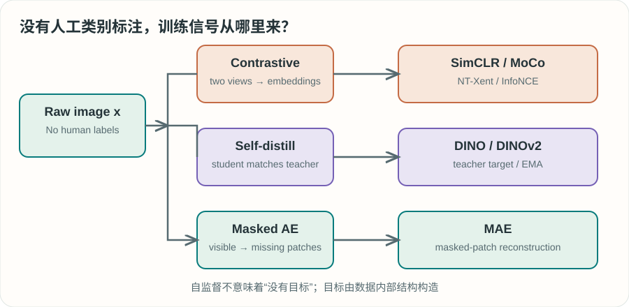
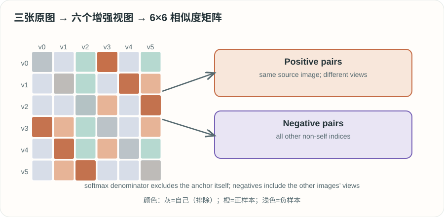
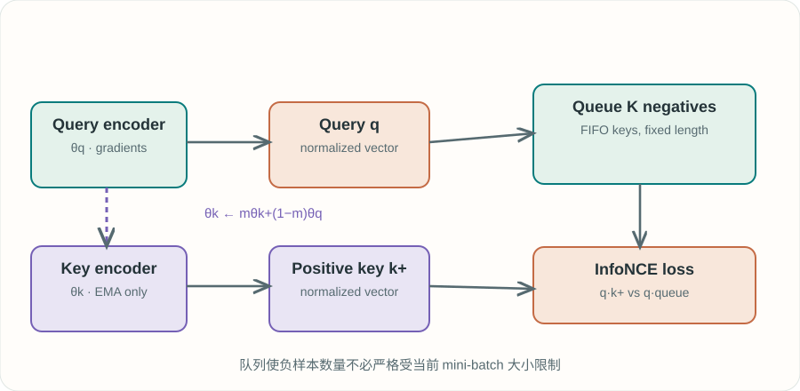
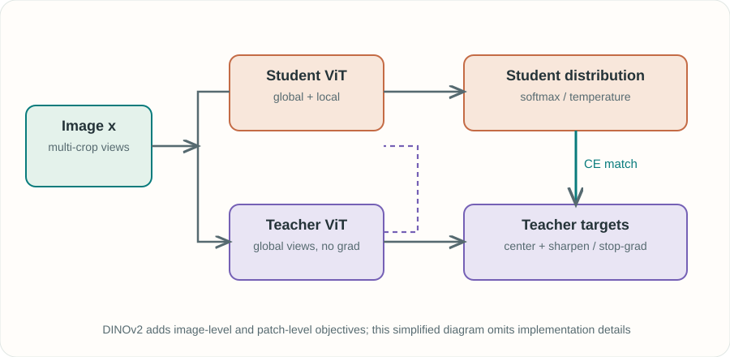

CHAPTER 26 · SELF-SUPERVISED LEARNING
自监督视觉表征：从对比学习到掩码重建
没有人工类别标签，不代表没有训练目标。通过增强视图、动量教师和掩码重构，我们可以从图像自身生成监督。逐步理解 SimCLR、MoCo、DINO/DINOv2 与 MAE 的机制、公式和失败边界。
无标签图像如何提供训练信号
即使不知道一张照片拍的是猫还是狗，我们仍知道随机裁剪后的两张视图来自同一幅原图，也知道图像中某些 patch 被遮挡之前的真实像素。自监督学习（Self-Supervised Learning，SSL）以这种由数据自身构造的信号训练编码器；它没有人工目标类别标签，但绝不是“没有训练目标”。
最有代表性的三条路线分别是：构造“同源/不同源”视图对的对比学习；让学生匹配稳定教师分布的自蒸馏；在随机掩码后重建缺失 patch 的掩码建模。它们可以共享 CNN 或 Vision Transformer 骨干，但损失、数据结构、训练计算各不相同。

下游评估时应先冻结预训练 backbone，按同一数据划分训练线性分类器，检验表征的线性可分性；然后再进行全量微调评估。较低的预训练损失并不能单独证明更好的下游语义表征。
SimCLR：两种视图的对比损失
对每张训练图像独立采样两次增强，N 张图像得到 2N 个视图。来自同一原图的两份视图互为正样本；其它不同原图的视图是当前任务的负样本，即使它们恰好属于同一个语义类别。增强通常组合随机裁剪、颜色扰动和模糊，设计目的是迫使编码器忽略任务不关心的变化。
一个视图先经过编码器 f 得到 h，再经非线性 projection head g 得到 z。NT-Xent 在 L2 归一化的 z 上计算余弦相似度，temperature τ 控制分布尖锐程度。下游特征通常取编码器的 h，而不是直接复用 projection head。论文的关键发现之一是增强的组合与 projection head 对表示学习非常重要。
s(i,k) 是两个归一化向量的点积；j 是 anchor i 的另一份同源视图；分母有 2N−1 项，自身位置必须排除。

误负样本：两张独立图片可能恰好都是同一品种的猫，但 SimCLR 的代理任务仍把它们看成不同实例。增大 batch 能得到更多负样本，却会增加训练成本；不能把对比学习的“负样本”自动解释为“类别不相同”。
MoCo：动量编码器与负样本队列
Momentum Contrast（MoCo）不把大字典完全绑定在当前 mini-batch 上。Query encoder 由梯度更新；Key encoder 不由当前 loss 直接反传梯度，而是通过查询模型参数的指数滑动平均（EMA）更新。产生的 key 向量进入先进先出队列，较旧的 key 被移出，作为后续 batch 的对比字典。
m 通常接近 1，从而让 key 表征相较 query 更新缓慢。

如果直接把所有旧 key 与不断快速变化的新 query 比较，表示空间会不一致；EMA 的目的就是缓和这一问题。MoCo 的早期版本保留了显式负样本队列；后来的 MoCo v3 结构不同，不应把所有版本都称作“同一个 queue 算法”。
DINO / DINOv2：没有显式负样本的自蒸馏
DINO（Self-Distillation with No Labels）将同一图像的不同增强视图送入 student 与 teacher。Student 获得梯度并最小化教师分布上的交叉熵，teacher 通过 EMA 更新且不走 student loss 的反向传播路径。Teacher logits 的 centering 和 sharpening 与 multi-crop 配方用于减轻表示塌缩；一个简单的 teacher/student 交叉熵本身并不保证学到有区分力的表示。
Teacher target 需停止梯度；teacher/student 的温度与增强视图集合可以不同。

DINOv2 在方法之外强调数据质量和规模。官方说明其模型在经过筛选的约 1.42 亿张无标签图像上预训练，并把视觉特征用于分类、检索、分割与深度等下游任务。这个数量是 DINOv2 原项目的规模，不是自监督训练的必要条件；复现实验还要记录数据授权、来源与训练预算。
防止塌缩需要检查嵌入跨样本的方差、类别线性探测和检索质量。即使预训练 loss 下降，如果所有图片都映射到同一个常量向量，也无法解决视觉理解任务。
MAE：75% 掩码与非对称编码器
Masked Autoencoders（MAE）把图像切成互不重叠的 patches，并随机隐藏其中大部分。原始论文典型设置使用 75% masking。与“把 mask token 都交给 encoder”不同，MAE 使用非对称 encoder-decoder：计算较昂贵的 ViT encoder 只处理可见 patches，较轻的 decoder 才插入 mask tokens 与位置编码，还原缺失像素。
这是按 patch 汇总的教学式 MSE 写法；原论文训练还可选择 per-patch pixel normalization。

75% 不是图像分割的“遮挡率”，而是这个预训练代理任务的一种配置。MAE 的像素重构与 DDPM 的逐步随机扩散模型并不是同一个算法；它们都处理部分未知信息，但模型状态、时间变量和训练损失不同。
方法对照与预训练边界
| 方法 | 训练信号 | 关键机制 | 主要风险 |
|---|---|---|---|
| SimCLR | 两视图对比 | Projection head / NT-Xent | 误负样本、大 batch 成本 |
| MoCo | 动量对比 | EMA Key / FIFO queue | 历史 key 一致性 |
| DINO | Teacher 分布匹配 | EMA / Center / Sharpen | 表示塌缩 |
| DINOv2 | 全局及 patch 蒸馏配方 | Curated data / ViT | 数据及训练成本 |
| MAE | Patch 像素重构 | Visible-only encoder | 重构与语义不等价 |
不存在脱离数据与算力的绝对最优 SSL 方法。对比时必须统一输入分辨率、下游训练标签数量、训练预算、线性 probe 协议和模型参数规模；同时区分原始论文和后续改进版本。
四个可运行的张量实验
以下四段仅依赖 CPU PyTorch，任何一段都可以独立复制并运行；它们检查索引、张量形状、EMA 更新、停止梯度与随机掩码，不是训练论文完整模型，也不使用外部权重。推荐 Python 3.12 与公开 CPU PyTorch 构建。
1. SimCLR：准确排除自身相似度
import torch
import torch.nn.functional as F
torch.manual_seed(7)
N, D, temperature = 3, 8, 0.2
base = torch.randn(N, D, requires_grad=True)
views = torch.cat([base, base + 0.01*torch.randn(N, D)], dim=0)
z = F.normalize(views, dim=1)
scores = (z @ z.T) / temperature
scores = scores.masked_fill(torch.eye(2*N, dtype=torch.bool), -1e9)
positive_indices = (torch.arange(2*N)+N) % (2*N)
loss = F.cross_entropy(scores, positive_indices)
loss.backward()
assert scores.shape == (6, 6)
assert positive_indices.tolist() == [3,4,5,0,1,2]
assert torch.isfinite(loss) and base.grad.abs().sum() > 0
print("NT-Xent:", round(loss.item(), 5))2. MoCo：动量参数与 FIFO 队列
import torch
# Scalar vectors stand in for the entire query/key encoder parameter sets.
query_weights = torch.tensor([4.0, 2.0])
key_weights = torch.tensor([0.0, 0.0])
m = 0.9
with torch.no_grad():
key_weights = m*key_weights + (1-m)*query_weights
queue = torch.tensor([[1.,0.], [0.,1.], [-1.,0.]])
new_key = torch.tensor([[0.6, 0.8]])
next_queue = torch.cat([queue[1:], new_key], dim=0)
assert torch.allclose(key_weights, torch.tensor([0.4,0.2]))
assert next_queue.shape == queue.shape
assert torch.equal(next_queue[-1], new_key[0])
print("EMA and FIFO verified")3. DINO：teacher 不接收梯度
import torch
import torch.nn.functional as F
student = torch.tensor([[0.2,1.0,-0.6]], requires_grad=True)
teacher = torch.tensor([[1.4,-0.2,0.3]])
center = torch.tensor([[0.1,0.0,0.1]])
with torch.no_grad():
p_teacher = F.softmax((teacher-center)/0.07, dim=-1)
loss = -(p_teacher*F.log_softmax(student/0.1,dim=-1)).sum(-1).mean()
loss.backward()
assert torch.allclose(p_teacher.sum(-1), torch.ones(1))
assert student.grad is not None and student.grad.abs().sum() > 0
assert teacher.grad is None
print("teacher-to-student CE verified")4. MAE：计算 75% 掩码后 encoder 的输入规模
import torch
x = torch.arange(64, dtype=torch.float32).reshape(1,1,8,8)
unfolded = x.unfold(2,2,2).unfold(3,2,2)
patches = unfolded.permute(0,2,3,1,4,5).reshape(1,16,4)
order = torch.randperm(16, generator=torch.Generator().manual_seed(0))
keep, masked = order[:4], order[4:]
visible = patches[:,keep]
mask = torch.zeros(16,dtype=torch.bool)
mask[masked] = True
assert patches.shape == (1,16,4)
assert visible.shape == (1,4,4)
assert int(mask.sum()) == 12
assert set(keep.tolist()).isdisjoint(masked.tolist())
print("MAE visible=4, masked=12")下游线性评估与失败模式
冻结预训练 backbone，用相同标签预算训练 linear head，可以测试特征是否线性可分；完整 fine-tuning 评估的是适配后的性能，而不是冻结特征的“原始质量”。图像检索应使用 recall@K，下游分割应统一 decoder 与 mIoU/Dice 协议；不要拿不同任务的指标当同一排行榜。
- 训练数据治理：规模大不等于代表性强，需检查许可证、隐私与采集域偏差。
- 错误的增强不变性：随机 crop 可能切除病灶或产品缺陷，破坏任务需要的标签语义。
- 自蒸馏塌缩：不要仅根据交叉熵下降判断模型没有退化到常量表示。
- 掩码重建偏好：MAE 的 pixel reconstruction loss 下降不自动证明语义识别更好。
- 实验口径：对比网络前先控制 backbone、输入尺寸、训练计算、数据源与评估划分。
理解检查：SimCLR 的正样本代表同一语义类别吗？
不一定。原始 SimCLR 的正样本是同一源图像的两份随机增强视图，而不是人工语义标签相同的两张图。